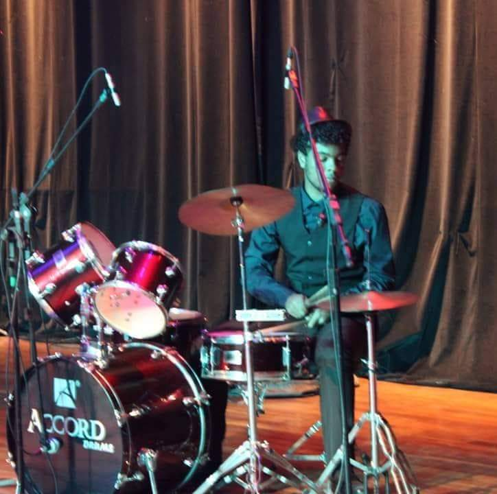

Victor Heinrick é um músico entusiasta que toca uma série de instrumentos, tais
como: Violão, Guitarra, Teclado, Bateria, Ukulele, cavaquinho e etc.
Sua paixão pela música vem desde a infância por influência da família de seu pai que gerou uma
série de músicos de sucesso, como por exemplo Thiago Dom, que foi baterista de cantores como
Fernanda Brum,
Fernandinho e outros músicos conhecidos do meio Gospel.
Desde pequeno teve incentivo de seu pai, que também é apaixonado pela música e
a tem como um de seus príncipais hobbys. Aos 5 anos, Victor começou a demonstrar interesse pelo
que seria seu principal e favorito instrumento: A bateria.
-

Após alguns anos desenvolvendo-se na bateria, Victor começou a demonstrar interesse em uma série de outros instrumento e pôs em prática os conhecimentos que tinha obtido para facilitar seu aprendizado.
E assim surgiu o HowTo play, uma comunidade que reúne músicos de todo o país para dar dicas de instrumentos e dicas do básico ao avançado de como aprender a tocar um novo instrumento.
Venha você também fazer parte dessa comunidade
inscrevendo-se hoje!
.png)